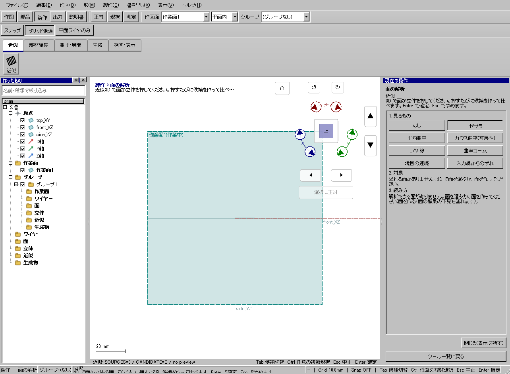
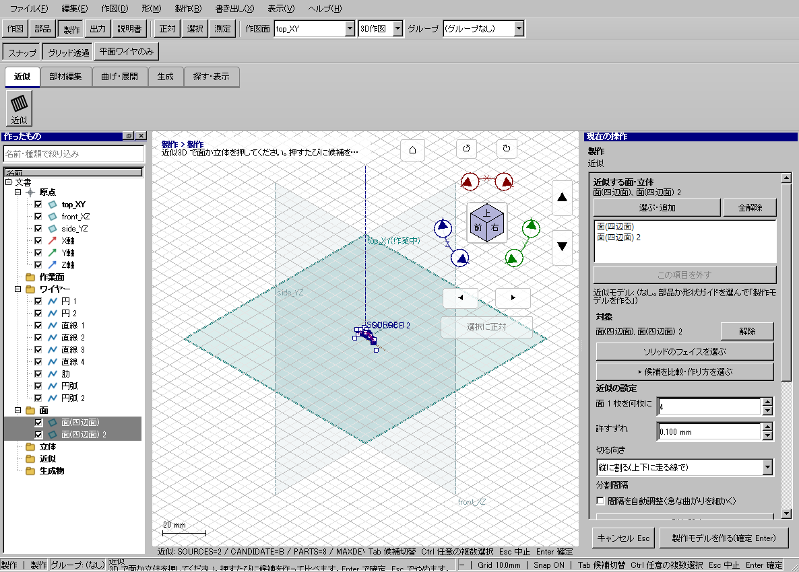

屋根面を12枚の板材で近似する
使う機能：製作モデルを作る
日常設定の枚数・ずれ・方向・自動調整を先に決めます。方式名を覚えるより、形と枚数、板幅、誤差を比較して工作できる案を選びます。
元面に近い板材群ができる。外形を横切る帯や許容超過を結果から確認する。
1 準備 — 元の図形から作る
屋根の曲面を1枚作る。
まだ用意できていなければ、次の手順を先に行ってください。既にモデルがある場合も、例の座標・大きさ・面の向きを自分のモデルへ読み替えます。
- 面から近似モデルを作り、原寸型紙へ進む — 図形の作成から順に練習できます。
- 高さ違いの円2本から円筒状の面を作る — 図形の作成から順に練習できます。
- 線・面・部品を取り違えずに選ぶ — 図形の作成から順に練習できます。
練習前にKCD2を別名保存します。数値の長さはmm、角度は度です。平面内のu/vと世界XYZを区別します。
2 使う道具を開く — 押す場所
- 製作 → 近似 → 近似
別の入口：Ctrl+K → 製作モデルを作るを検索 → 候補の用途を確認して開きます。別モードなら「全モードから探す」をオンにします。

3 操作手順 — 一つずつ進める
完成品の面を用意する
まず理想形の面を作ります。線だけや未確定の面プレビューを、近似モデルの元と取り違えないようにします。
画面で確認：元面と近似の下見を同時に比較できる状態にします。
近似を開いて対象を入れる
「製作 → 近似 → 近似」を押し、対象面を選択します。ソリッドの一面ならフェイスから近似を使います。
画面で確認：対象欄の名前と3DのSOURCE表示が一致します。
枚数と誤差を決める
枚数12、許容ずれ0.1mmを例に入力します。誤差を基準に枚数を決めたい時だけ枚数を0にします。
画面で確認：指定枚数と誤差優先は別の方針です。

屋根の別例：入力面に近似の下見を重ねて比較。 画像を押すと原寸で開きます。 方向を比較する
縦割り・横割りで下見を比較します。元面の外形から飛び出した帯、端の尖り、工作できない細片がないかを見ます。
画面で確認：同じ枚数でも方向で誤差や部材幅が変わります。
自動調整を比較する
「間隔を自動調整」をオン／オフにします。曲率の強い部分へ分割が配分され、極端に狭い板ができていないか確認します。
画面で確認：見た目だけでなく幅と最大ずれを読みます。
必要なら詳細を開く
候補や詳細設定を開き、枚数、方式、最大ずれを比較します。使い慣れるまでは日常条件を先に調整します。
画面で確認：不成立の候補を、結果が生成された候補と混同しません。
確定して展開へ進む
目的の形を選びEnterで確定します。製作モデルと部材の一覧が増えたことを確認し、展開で型紙を作ります。
画面で確認：組み立てた姿と平面の型紙の両方で、作れる部材か確認します。

屋根の別例：近似モデルを確定。 画像を押すと原寸で開きます。 
同じ屋根の型紙。切出しと組立を別々に確認。 画像を押すと原寸で開きます。
4 設定する欄と数値
ボタン名・欄名と、今回使う値を対応させてください。項目が出ていない場合は作り方・モードが合っているか確認し、ペイン内をスクロールします。
| 見る欄・役割 | この例の設定と意味 |
|---|---|
| 枚数 | 12、0なら誤差優先 |
| 許容ずれ | 0.1mm |
| 間隔を自動調整 | オン／オフ比較 |
| 方向 | 縦／横比較 |
選択の確認：役割欄の名前と3Dの強調を照合します。重なって拾いにくい時はTabで候補を替えます。全体を使う例では左一覧の要素名を選び、3Dの1辺選択と区別します。

この実画面は既存操作試験の一場面で、下の数値例の完成画像とは限りません。設定・選択の操作画面。具体的な完成例は段階写真のある作業例を参照してください。
5 確定して結果を確認
必要な入力と数値をそろえ、下見と状態欄を確認して、右ペインの作成・適用・確定ボタンを押します。Enter対応の道具はEnterでも確定できます。
元面に近い板材群ができる。外形を横切る帯や許容超過を結果から確認する。
形を作る操作では、元と結果の名前を分けて一覧で確認し、必要に応じて元を一時非表示にします。表示だけの機能では形状や要素数を変えることが目的ではありません。
6 取消・やり直し・保存
Escで未確定の入力を取り消します。道具を終えるには選択（V）か別の道具へ切り替えます。確定済みの図面変更はCtrl+Z、やり直しはCtrl+Yです。
モデルの編集正本はKCD2、説明書の編集正本はKCIです。外部へ出力するだけの機能では、出力ファイルと編集元を両方残してください。
進めない場合 — 症状から戻る場所を探す
| 起きていること | 確認して直す場所 |
|---|---|
| 輪郭外を横切る | 対象面と分割方向、下見外形を確認 |
| 細片が多い | 枚数・最小幅・誤差の条件を見直す |
この機能の入力条件：部品か形状ガイドを1つ以上選んでください(何個でも 1 つの製作モデルにまとめます)。
計算中は処理表示を見ます。失敗が出たら、対象・入力条件を変えずに何度も押すのでなく、案内にある対象と条件を確認します。
別の方式・条件で使う
枚数優先
まず主手順で入力の役割を確認し、この例の値と操作へ置き換えます。
この例の準備：屋根曲面
枚数12を指定します。許容ずれも読み、12枚という工作条件と精度が両立するかを下見で判断します。枚数だけを満たして外形から逸脱してよいわけではありません。
- 枚数12
- 方向を指定
- 下見の誤差・幅を確認
- Enter
結果の見分け方：指定枚数の近似
この実画面は既存操作試験の一場面で、下の数値例の完成画像とは限りません。方式間で共通の入力欄を確認する参考画面です。この方式・上記の数値で確定した結果の画像ではありません。
誤差優先
まず主手順で入力の役割を確認し、この例の値と操作へ置き換えます。
この例の準備：屋根曲面
枚数を0にすると誤差優先です。許容ずれ0.1mmに対して結果の枚数が何枚か読み、細すぎて作れない帯がないか確認します。
- 枚数0
- 許容ずれ0.1mm
- 下見の枚数・幅を確認
- Enter
結果の見分け方：誤差を基準に枚数を決める
この実画面は既存操作試験の一場面で、下の数値例の完成画像とは限りません。方式間で共通の入力欄を確認する参考画面です。この方式・上記の数値で確定した結果の画像ではありません。
間隔を自動調整
まず主手順で入力の役割を確認し、この例の値と操作へ置き換えます。
この例の準備：曲率が変わる屋根曲面
枚数12のまま自動調整のオンとオフを比較します。曲がりの強い部分へ間隔が配分されるか、端部が極端な細片にならないかを見ます。
- 枚数12
- 自動調整オン
- 下見
- オフと比較
- Enter
結果の見分け方：急な曲がりへ間隔を配分
方向を比較
まず主手順で入力の役割を確認し、この例の値と操作へ置き換えます。
この例の準備：同じ屋根曲面
同じ面・同じ枚数で分割方向だけを替えて比べます。最大ずれと部材幅が小さい方だけでなく、切出し・接着・組立のしやすさで選びます。
- 縦割り
- 下見
- 横割り
- 下見
- 幅と最大ずれを比較
結果の見分け方：工作しやすい分割方向を選べる
この実画面は既存操作試験の一場面で、下の数値例の完成画像とは限りません。方式間で共通の入力欄を確認する参考画面です。この方式・上記の数値で確定した結果の画像ではありません。
参考画面の出典と確認範囲
試験名：HP-AP-05 atama の面 2 枚を選んで 近似 を押すだけで縦割り 4 部材 × 2(角のレールつき)、横割りも選べる。試験全体の結果：passed。画像はコマンド呼出し直後で、入力待ち・下見の場合もあります。各段階の完成証拠ではありません。